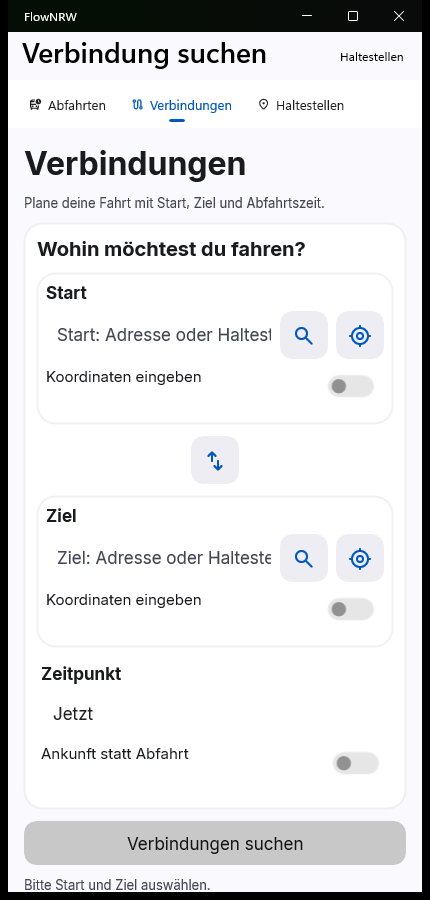
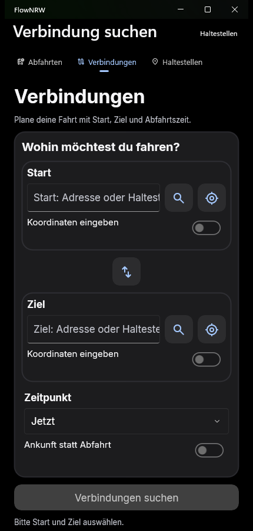
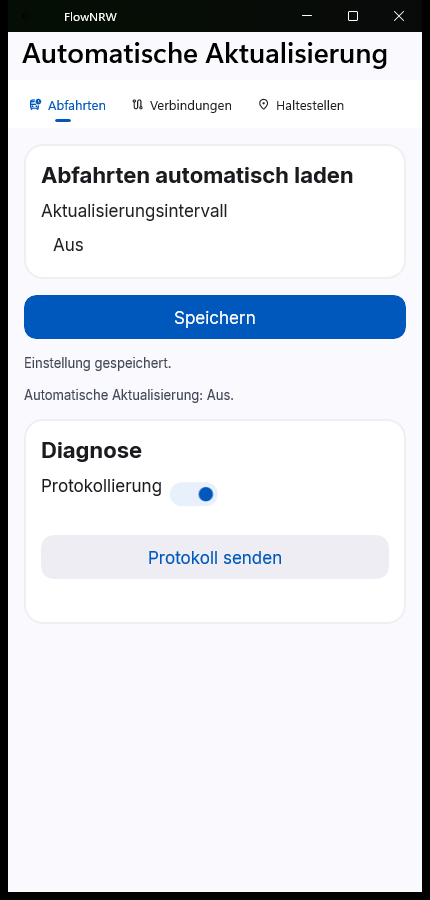
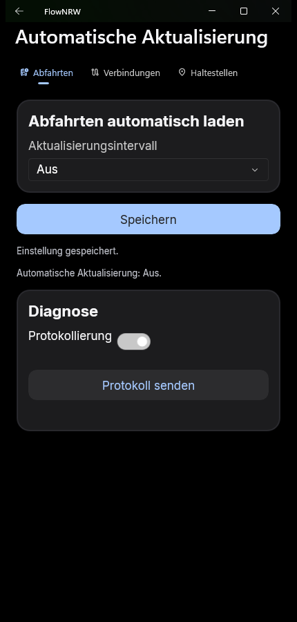

Verbindungssuche
Start und Ziel per Adresse, Haltestelle oder Koordinate. Ergebnisse mit Umstiegen, Fußwegen, Linien und Betreibern – inklusive Detailansicht jeder Teilstrecke.
Bundesweite ÖPNV-Verbindungen und Abfahrten mit bevorzugten NRW-Echtzeitdaten – als native App mit klarem, modernem Design.
Start und Ziel per Adresse, Haltestelle oder Koordinate. Ergebnisse mit Umstiegen, Fußwegen, Linien und Betreibern – inklusive Detailansicht jeder Teilstrecke.
Nächste Abfahrten je Haltestelle – Verspätungen, Ausfälle und Gleiswechsel werden direkt angezeigt. Bei Fehlern bleiben die letzten bekannten Daten sichtbar.
Dauerhaft gespeicherte Haltestellen mit eigenen Abfahrtstafeln, nach Entfernung sortierbar – direkt auf der Startseite.
Interaktive Karte mit Haltestellenpositionen, Kartenverläufen zu gefundenen Verbindungen und nahen Haltestellen – alternativ als Liste bedienbar.
Konfigurierbare Monitorintervalle (aus, 30, 60, 120 oder 300 Sekunden) halten sichtbare Abfahrten und Verbindungen im Vordergrund aktuell.
Regionale NRW-Echtzeitdaten werden bevorzugt und um zusätzliche bundesweite Fahrten ergänzt; bei fehlenden Echtzeitdaten bleiben Ersatzdaten und Datenalter sichtbar.
Einblicke in die App – helle und dunkle Darstellung.




Die aktuellen Vorabversionen für die vorhandene Desktop-Anwendung stehen auf GitHub bereit.
Releases anseheniOS ist die Zielplattform von FlowNRW; eine iOS-Version befindet sich derzeit in Entwicklung.